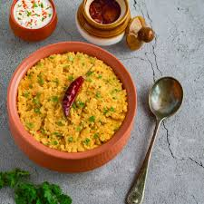

Khichdi

Ingredients:
- 200g rice
- 100g cereals
- 1 Onion, chopped
- 2 Garlic cloves, minced
- 40g Tomato sauce
- Salt & Pepper
Instructions:
- Cook rice according to package instructions.
- Sauté onion and garlic until fragrant.
- Add dal and cook until browned.
- Pour in tomato sauce and simmer for 15 mins.
- Mix with poha and serve hot.
Poha

Ingredients:
- 2 cups thick (mota) poha
- 2 tablespoons oil
- 1/2 teaspoon black mustard seeds
- tablespoons peanuts
- 1/2 cup minced onion (about 1 medium onion)
- 6 curry leaves
- 1 green chili, minced
- 1/2 cup boiled, peeled, cubed potato or frozen green peas. Both are optional.
- 1/2 teaspoon turmeric powder
- 1 teaspoon lime juice
- 2 tablespoons chopped cilantro for garnish
Instructions:
- Cook poha according to package instructions.
- Sauté onion and garlic until fragrant.
- Add dal and cook until browned.
- Pour in tomato sauce and simmer for 15 mins.
- Mix with spaghetti and serve hot.